- Rule of Thirds
The rule of thirds is the most talked up of the rules of composition and is one of the easiest ways to teach photography composition for beginners.It's not the end-all-be-all rule, but it's a fabulous starting place. To practice this rule, divide the frame of your photograph with two equally spaced vertical lines and two similar horizontal lines.
These lines and the four points at which they meet create areas on your frame for placing subjects and essential elements. Probably the most important takeaway from the rule of thirds is that subjects generally do not belong centered in the frame. By placing them carefully using the rule
of thirds, you can control the final image and the journey your viewer takes through the frame.
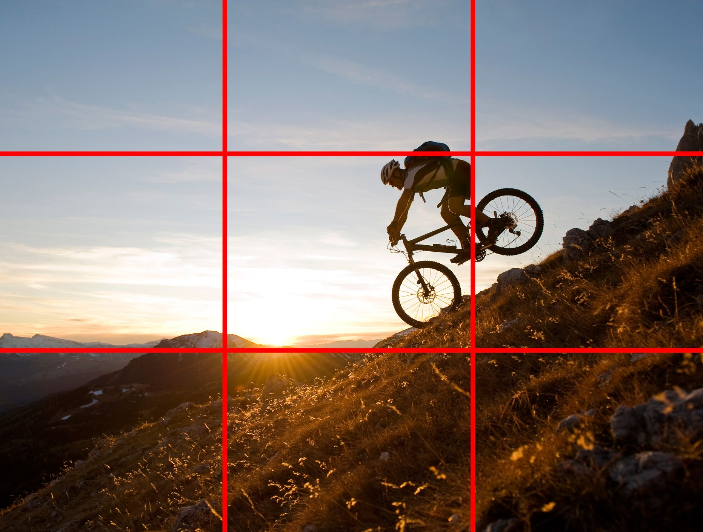 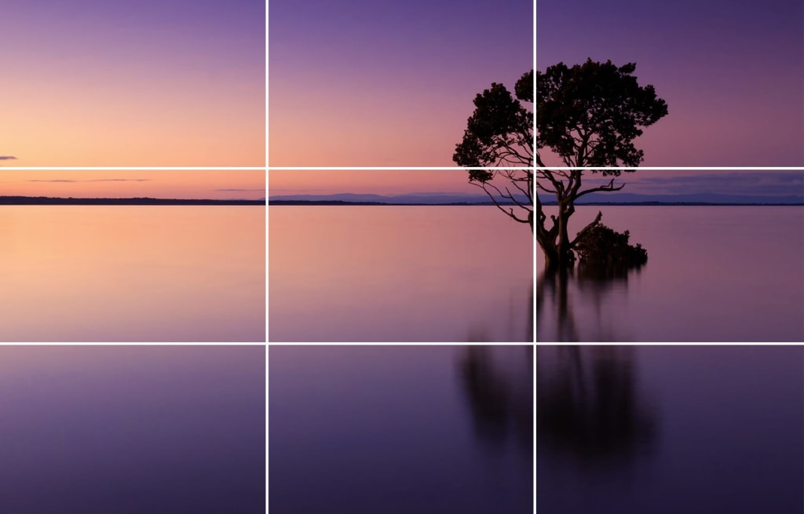
- Leading Lines
Once you start looking for them, lead lines are everywhere. A road, a rough footpath, a shoreline, a distant mountain range, the vertical trunks of trees in a forest, or even the arms and legs of a model can all be used in the composition of a photograph. At first, straight lead lines are the easiest to identify and follow.
But as soon as you realize that a lead line simply leads your eyes, it becomes clear that even curved lines can get the job done. Leading lines are
photography composition basics, which needs to be mastered.
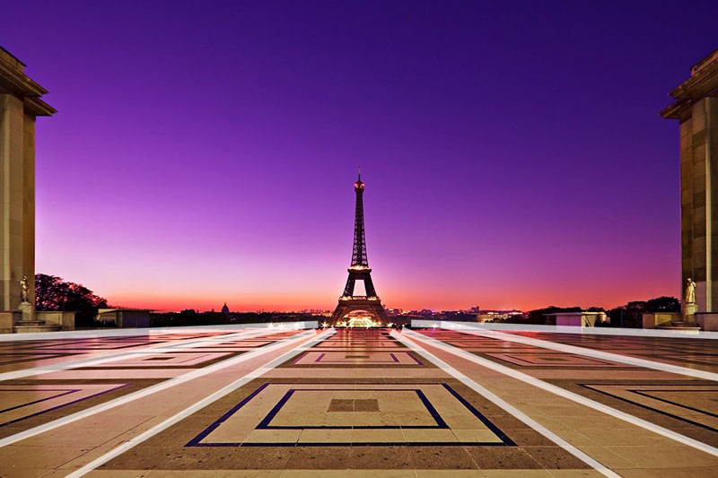
The idea of lead lines is that the photographer arranges these elements in the photograph to lead the viewers' eyes to the subject. Once you know what to look for,
you'll see lead lines everywhere.
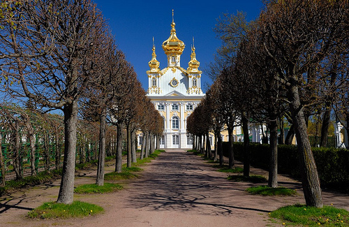
- Capturing Symmetry
Symmetrical scenes can make beautiful photographs. Think of reflection pools near monuments or calm mountain lakes reflecting fall colors. Likewise,architecture is full of symmetry. In some ways, human brains are programmed to respond to symmetry, so it always makes a captivating and exciting capture.
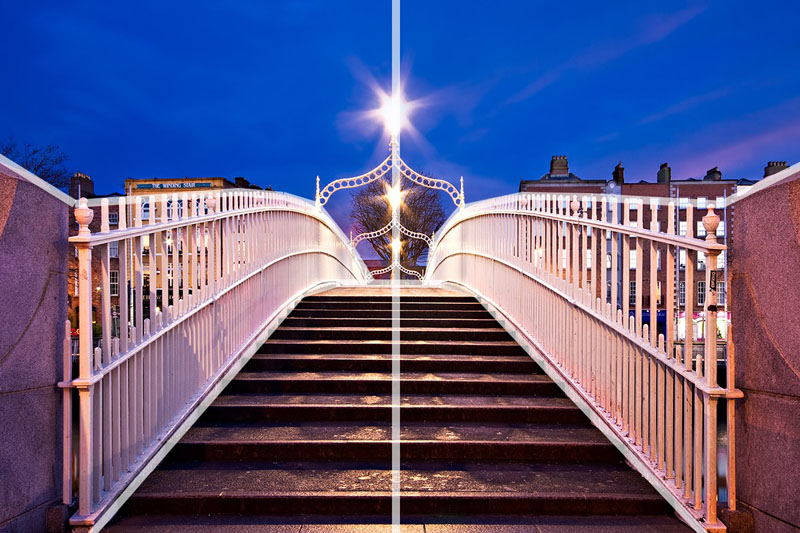
Symmetrical photos seldom follow the rule of thirds or the golden ratio. More often than not, the horizon bisects the frame equally, and the subject is centered.
Sometimes it's okay to break the rules, but only if you realize why it works.
- Frame Within the Frame
Including a ‘frame withing the frame’ is another effective way of portraying depth in a scene. Look for elements such as windows, arches or overhanging branches to frame the scene with. The ‘frame’ does not necessarily have to surround the entire scene to be effective.They can isolate your subject, drawing the eye directly to it, they can hide unwanted items behind it, give an image depth and help create context. Using a ‘frame within a frame’ presents a great opportunity to use your surroundings to be creative in your compositions.

- Foreground Interest and Depth
A foreground is the part of a scene that is nearest to and in front of the photographer. In a sense, it is the stuff that is right at your feet. Not any foreground will do!Having something of visual interest that is closer than your main subject adds depth and compositional power, even if that something is quite far away from you. As long as you include something that is between you and your subject, it will achieve your goal of creating depth and a dynamic visual relationship between nearer and farther elements. Foregrounds aren’t just for wide-angle lenses either; you can use foregrounds with longer lenses too. Having something of visual interest that is closer than your main subject adds depth and compositional power, even if that something is quite far away from you. 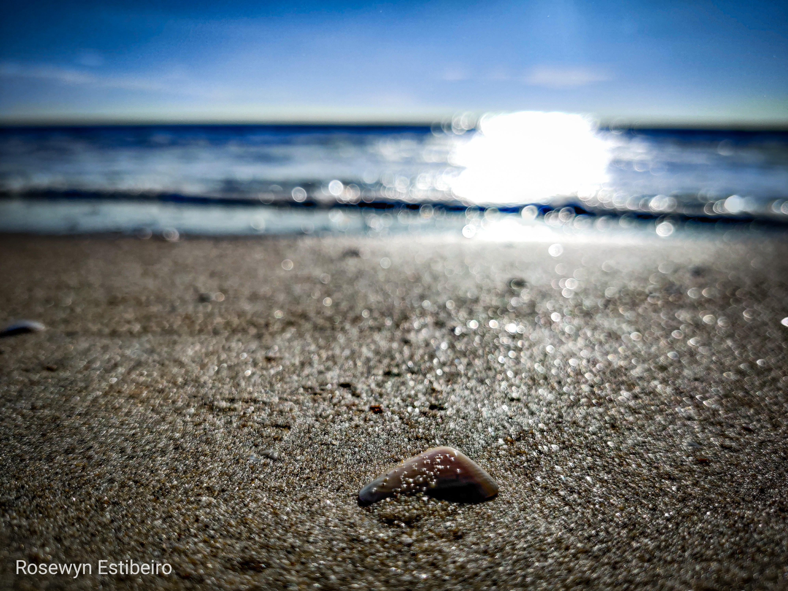 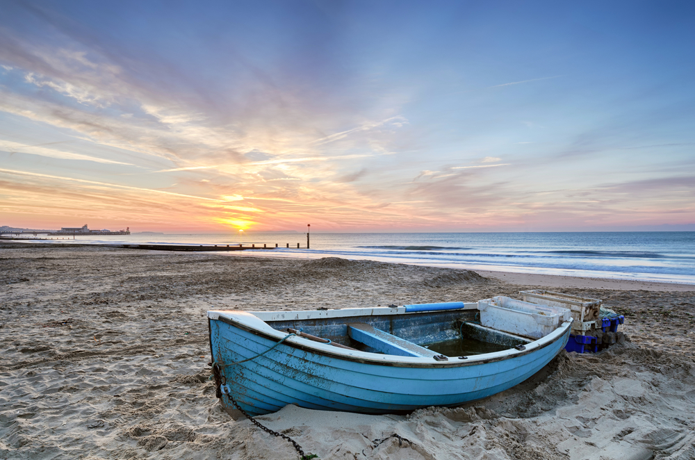
- Viewpoint
Most photos are taken from eye level. Changing your position, and therefore your viewpoint, can dramatically change the image. Getting down low to photograph your subject, or positioning yourself at greater height than your subject will create a very different image.
Different viewpoints will certainly add more drama to your photography composition than the expected standing height viewpoint.Your viewpoint in photography is your perspective on the world you’re photographing. Your choice of photography viewpoint when composing an image forms part of the story you’re telling in your photograph.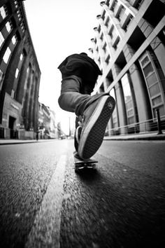 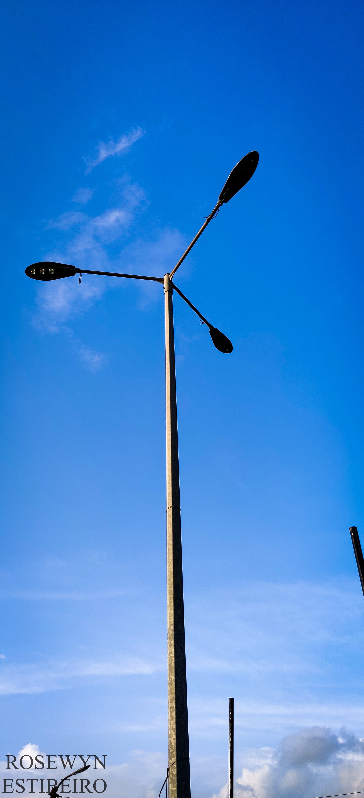
- Rule of Space
The rule of space relates to the direction the subject(s) in your photo are facing or moving towards.The rule of space suggests that the subject should be looking or facing into the frame rather than out of it. The Rule of Space adds a Feeling of Motion or Action.As humans, we tend to look at the eyes of the subject first and then in the direction the eyes are pointed. As a photographer, this can be to our advantage. It gives us the ability to lead the eyes of the viewer around the image in a very specific way.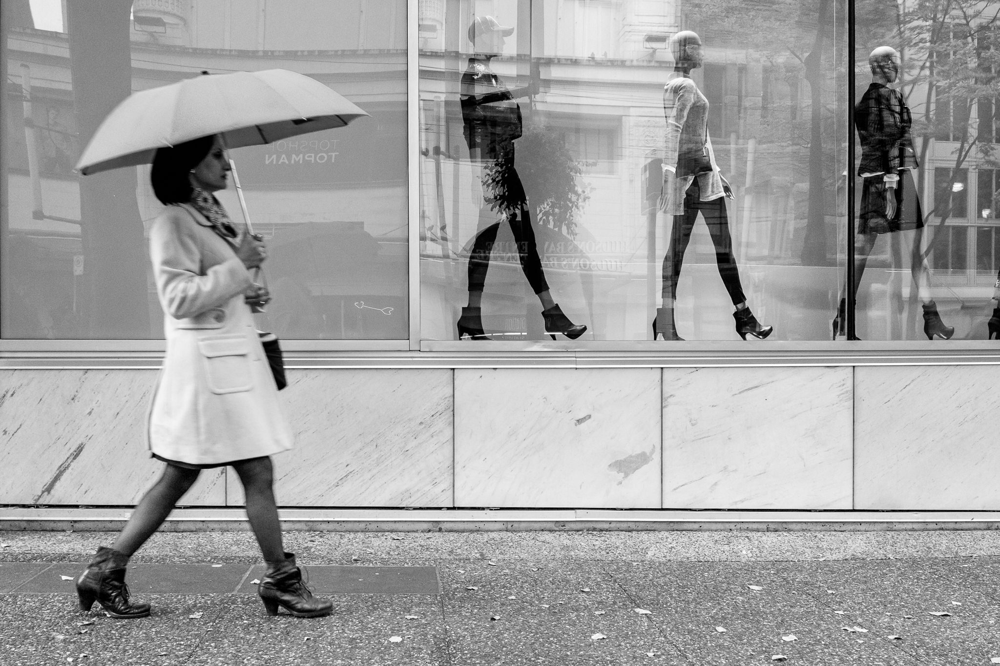 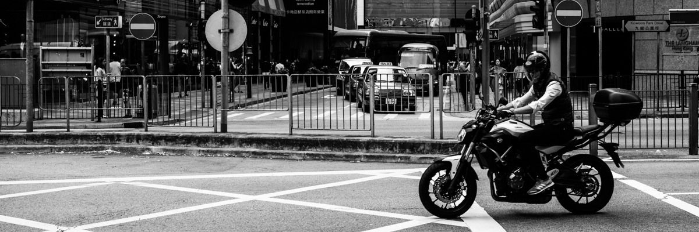
Types of camera lenses and their focal length
| Focal Length | Type of Lens | What is it used for? |
|---|---|---|
| 4mm - 14mm | Fisheye | Abstract, creative |
| 14mm - 35mm | Wide angle | Landscape, architecture |
| 35mm - 85mm | Standard | Street, travel, portrait |
| 85mm - 135mm | Short telephoto | Street photography and portraits |
| 135mm+ | Medium telephoto | Sports, wildlife, action |
| 300mm+ | Super telephoto | Sports from a distance, nature and astronomy |
| 35mm - 200mm | Macro | Close-up shots |